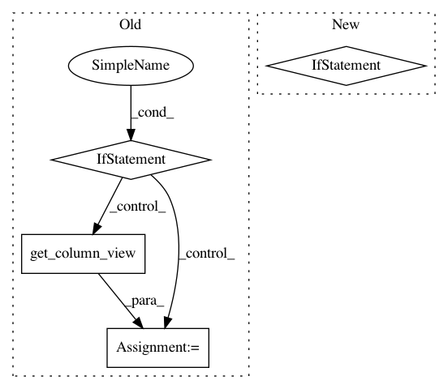

1bfc00fa651e0f13e5bbb27953dcacc7288108bf,Orange/statistics/basic_stats.py,BasicStats,__init__,#BasicStats#Any#Any#,9
Before Change
class BasicStats:
def __init__(self, variable, data):
if (isinstance(variable, Variable) and
not isinstance(variable, ContinuousVariable)):
raise ValueError("variable "{}" is not continuous".
format(variable.name))
col, sparse = data.get_column_view(variable)
self.min = bn.nanmin(col)
self.max = bn.nanmax(col)
// TODO sparse data
After Change
def __init__(self, dat=None, variable=None):
if isinstance(dat, Storage):
self.from_data(dat, variable)
elif dat is None:
self.min = float("inf")
self.max = float("-inf")
self.mean = self.var = self.nans = self.non_nans = 0
In pattern: SUPERPATTERN
Frequency: 3
Non-data size: 4
Instances
Project Name: biolab/orange3
Commit Name: 1bfc00fa651e0f13e5bbb27953dcacc7288108bf
Time: 2013-02-01
Author: janez.demsar@fri.uni-lj.si
File Name: Orange/statistics/basic_stats.py
Class Name: BasicStats
Method Name: __init__
Project Name: biolab/orange3
Commit Name: 03c4b0c6e6f8f19514d46defcde14688251f313c
Time: 2018-08-24
Author: tomaz.hocevar@fri.uni-lj.si
File Name: Orange/widgets/unsupervised/owmds.py
Class Name: OWMDSGraph
Method Name: compute_sizes
Project Name: biolab/orange3
Commit Name: 959f696b68e68ab67ea44b49dd1070c217ee62b1
Time: 2016-09-13
Author: marko.toplak@gmail.com
File Name: Orange/preprocess/transformation.py
Class Name: Transformation
Method Name: __call__